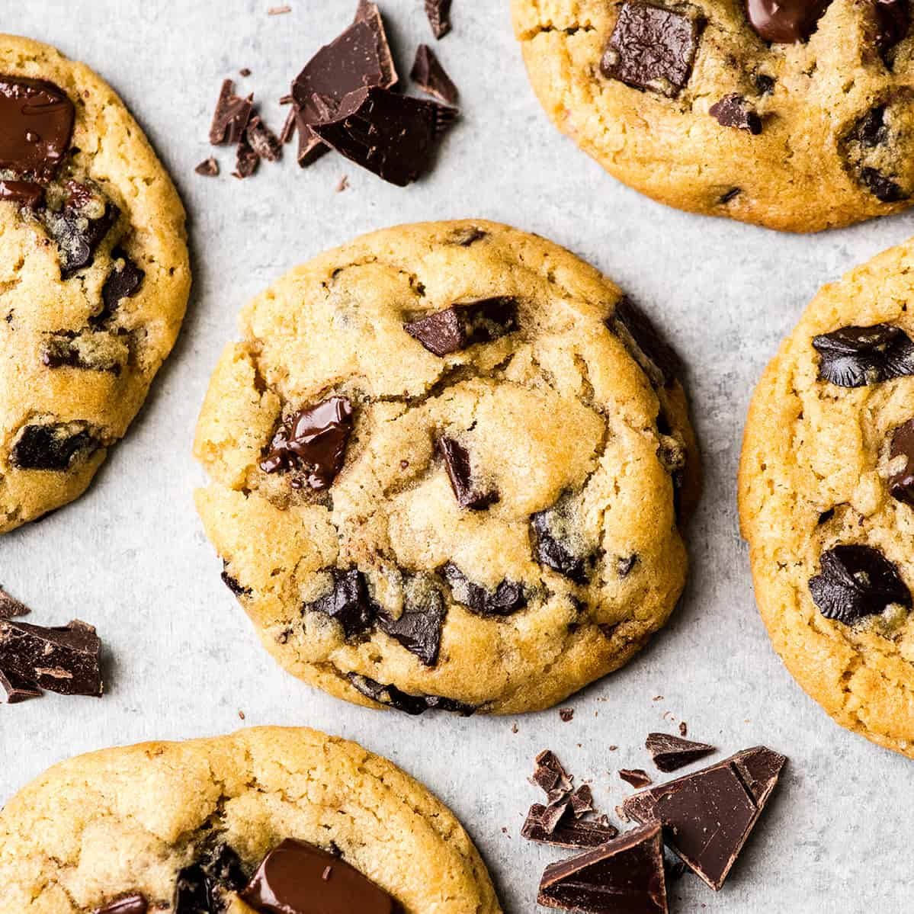

Back to home
Chocolate chip cookies

Everyone needs a classic chocolate chip cookie recipe in their repertoire, and this is mine. It is seriously the Best Chocolate Chip Cookie Recipe Ever! I have been making these for many, many years and everyone who tries them agrees they’re out-of-this-world delicious!
Plus, there’s no funny ingredients, no chilling, etc. Just a simple, straightforward, amazingly delicious, doughy yet still fully cooked, chocolate chip cookie that turns out perfectly every single time!
Ingredients
- 1 cup butter, softened
- 1 cup white sugar
- 1 cup packed brown sugar
- 2 eggs
- 2 teaspoons vanilla extract
- 1 teaspoon baking soda
- 2 teaspoons hot water
- ½ teaspoon salt
- 3 cups all-purpose flour
- 2 cups semisweet chocolate chips
- 1 cup chopped walnuts
Steps
- Preheat oven to 350 degrees F (175 degrees C).
- Cream together the butter, white sugar, and brown sugar until smooth. Beat in the eggs one at a time, then stir in the vanilla. Dissolve baking soda in hot water. Add to batter along with salt. Stir in flour, chocolate chips, and nuts. Drop by large spoonfuls onto ungreased pans.
- Bake for about 10 minutes in the preheated oven, or until edges are nicely browned.